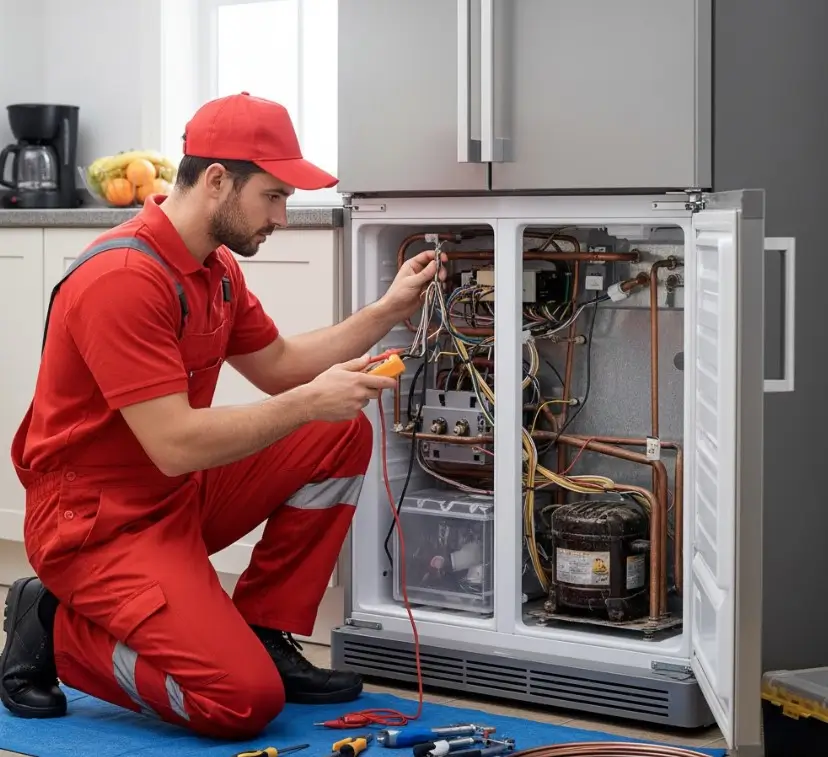

كم مرة يجب جدولة صيانة الثلاجات؟
دليل عملي لمتابعة الثلاجة، اكتشاف العلامات المبكرة، وتنظيم الصيانة الوقائية للحفاظ على كفاءة الجهاز.
الثلاجة من الأجهزة التي تعمل لساعات طويلة دون توقف، ولذلك فإن الصيانة الوقائية لا تعني انتظار العطل، وإنما تهدف إلى الحفاظ على كفاءة التشغيل واكتشاف المشكلات قبل أن تتطور.
وفي هذا الدليل من أرشيف التوكيل للصيانة، نستعرض أهم العلامات التي تستحق الانتباه، ومهام الصيانة البسيطة التي يمكن تنفيذها بأمان، وجدولًا عمليًا يساعدك على تنظيم متابعة الثلاجة طوال العام.
لا تستنى الثلاجة تبطل تمامًا
لو لاحظت ضعفًا في التبريد، صوتًا غير معتاد، تسريب مياه أو تشغيلًا مستمرًا للموتور، اطلب فحصًا بدل ما تستنى المشكلة تكبر.
اطلب فحص الثلاجةمتى تحتاج الثلاجة إلى صيانة؟
هناك علامات مبكرة يمكن أن تخبرك أن الثلاجة لم تعد تعمل بالكفاءة المعتادة. اكتشافها مبكرًا يساعد على التعامل مع المشكلة قبل أن تؤثر على الطعام أو باقي مكونات الجهاز.
- ضعف التبريد: الطعام والمشروبات لا تصل إلى البرودة المعتادة أو الفريزر لا يجمد بصورة جيدة.
- تسريب المياه: ظهور مياه داخل الثلاجة أو أسفلها يستحق الفحص لمعرفة مصدرها.
- أصوات جديدة: طنين أو طقطقة أو اهتزاز غير معتاد قد يشير إلى مشكلة تحتاج إلى تشخيص.
- تشغيل الموتور لفترات طويلة: قد يكون السبب ضعف التهوية أو تسريب البرودة أو مشكلة في منظومة التبريد.
- تراكم الثلج بصورة غير طبيعية: خصوصًا في الأجهزة التي يفترض أن تعمل بنظام إزالة الثلج تلقائيًا.
هل الصيانة الدورية تقلل استهلاك الكهرباء؟
الحفاظ على نظافة أجزاء التهوية والمكثف، وسلامة جوان الباب، وضبط الإعدادات بصورة مناسبة يساعد الثلاجة على العمل بكفاءة أفضل. وعندما يضطر الضاغط للعمل لفترات أطول بسبب مشكلة في التهوية أو فقدان البرودة، قد يرتفع استهلاك الطاقة.
لذلك لا تعتبر الصيانة مجرد تكلفة إضافية؛ فالفحص الوقائي قد يساعد في اكتشاف سبب تشغيل الجهاز بصورة غير طبيعية قبل أن يتحول إلى عطل أكبر.
ما الذي يمكنك عمله بنفسك؟
هناك أعمال بسيطة يمكن للمستخدم القيام بها دون فتح الدوائر الداخلية للجهاز:
- تنظيف المكثف أو منطقة التهوية: بعد فصل الكهرباء، وبحسب تصميم الموديل وتعليمات الشركة المصنعة.
- فحص جوان الباب: تأكد من سلامته ونظافته وأن الباب يغلق بإحكام.
- تنظيف الثلاجة من الداخل: أزل الأطعمة غير الصالحة ونظف الأرفف والأدراج وجففها جيدًا.
- عدم سد فتحات الهواء: اترك مساحة مناسبة حول فتحات توزيع الهواء داخل الجهاز.
- مراجعة درجة الحرارة: لا تجعل الإعداد على أقصى تبريد دون حاجة؛ اتبع إعدادات الشركة المصنعة.
صيانة الثلاجة قبل السفر لفترة طويلة
إذا كنت ستغيب عن المنزل لفترة طويلة، فالأفضل تجهيز الثلاجة بدل تركها دون متابعة. أفرغ الأطعمة القابلة للتلف، ونظف الجهاز وجففه جيدًا، وإذا كنت ستفصله عن الكهرباء فاترك الباب مواربًا لمنع تكون الروائح والرطوبة.
وعند العودة، افحص الجهاز بصريًا أولًا وتأكد من نظافته وسلامة الباب والتوصيلات الخارجية قبل إعادة التشغيل.
تنظيف الثلاجة كجزء من الصيانة
التنظيف المنتظم لا يحافظ على شكل الثلاجة فقط، بل يساعد على تقليل تراكم بقايا الطعام والروائح والرطوبة. افصل الكهرباء عند إجراء التنظيف العميق، وأخرج الأرفف والأدراج ونظفها بمادة مناسبة ثم جففها جيدًا.
اهتم كذلك بفتحة تصريف المياه في الموديلات التي تحتوي عليها، ولا تستخدم أدوات حادة أو مواد تنظيف قوية قد تضر الأسطح أو المكونات.
جدول عملي لمتابعة صيانة الثلاجة
| الفترة | المهمة | الهدف |
|---|---|---|
| بشكل دوري | تنظيف الثلاجة وفحص جوان الباب | الحفاظ على النظافة وإحكام غلق الباب. |
| كل عدة أشهر | مراجعة منطقة التهوية والمكثف حسب تصميم الجهاز | تقليل تراكم الأتربة ودعم كفاءة التبريد. |
| مرة سنويًا أو عند ظهور أعراض | فحص فني شامل عند الحاجة | اكتشاف المشكلات الداخلية وتشخيصها قبل تفاقمها. |
| عند الضرورة | التعامل مع تراكم الثلج في الموديلات التي تتطلب إذابة يدوية | منع تراكم الثلج المؤثر على الأداء. |
متى تحتاج إلى فني صيانة ثلاجات؟
إذا لم تختفِ المشكلة بعد الفحوصات الخارجية البسيطة، فلا يفضل تغيير قطع بالتجربة. اطلب فنيًا عندما يكون هناك ضعف مستمر في التبريد، تسريب متكرر، صوت ميكانيكي واضح، توقف الموتور، تراكم ثلج غير طبيعي أو أي مشكلة مرتبطة بدائرة التبريد.
التشخيص الصحيح يحدد سبب العطل أولًا، وبعدها يتم تحديد الإصلاح والقطع المطلوبة بدل زيادة التكلفة بتغييرات غير ضرورية.
ثلاجتك محتاجة فحص؟
التوكيل للصيانة يوفر خدمة صيانة وإصلاح الأجهزة المنزلية، مع إمكانية طلب زيارة منزلية، أو الاستفسار عن استقبال الجهاز في مقر الشركة حسب طبيعة الحالة.
احجز أو استفسر الآنأسئلة شائعة
كم مرة يجب فحص الثلاجة؟
تختلف الحاجة حسب نوع الثلاجة وطريقة استخدامها والبيئة المحيطة بها. يمكن إجراء المتابعة والتنظيف بصورة دورية، بينما يفضل طلب فحص فني عند ظهور أعراض غير طبيعية أو ضمن خطة صيانة وقائية مناسبة للجهاز.
هل ارتفاع حرارة جوانب الثلاجة يعني وجود عطل؟
ليس بالضرورة؛ بعض تصميمات الثلاجات تنقل الحرارة إلى مناطق خارجية للمساعدة في التخلص منها. لكن إذا كان الارتفاع شديدًا أو مصحوبًا بضعف تبريد أو تشغيل مستمر للموتور، فالأفضل فحص الجهاز.
هل يمكن تنظيف المكثف بنفسي؟
إذا كان الوصول إليه مخصصًا للمستخدم وفق تصميم الجهاز وتعليماته، يمكن تنظيف المنطقة بعد فصل الكهرباء. أما إذا كان الوصول يتطلب فك أجزاء داخلية، فالأفضل الاستعانة بفني.
ماذا أفعل إذا كان الموتور يعمل باستمرار؟
راجع أولًا إحكام الباب وعدم انسداد فتحات التهوية والإعدادات. إذا استمر التشغيل لفترات طويلة مع ضعف التبريد أو وجود صوت غير طبيعي، اطلب فحصًا متخصصًا.
هل التوكيل للصيانة يوفر قطع غيار أصلية؟
يمكن توفير قطع غيار أصلية عند الحاجة وتوفرها للموديل المطلوب، مع تطبيق الضمان على القطع والخدمة وفق سياسة الشركة.
خلّي صيانة ثلاجتك منظمة
لو عندك عطل أو عايز تستفسر عن فحص وقائي، ابعت نوع الثلاجة والماركة والموديل إن أمكن، مع وصف المشكلة، وابدأ من التشخيص الصحيح.
احجز أو استفسر الآنهل تواجه مشكلة أو عطلاً في جهازك؟
تواصل مع فريق "التوكيل للصيانة" الآن للحصول على استشارة فنية وفحص منزلي فوري بأعلى معايير الدقة والأمان.